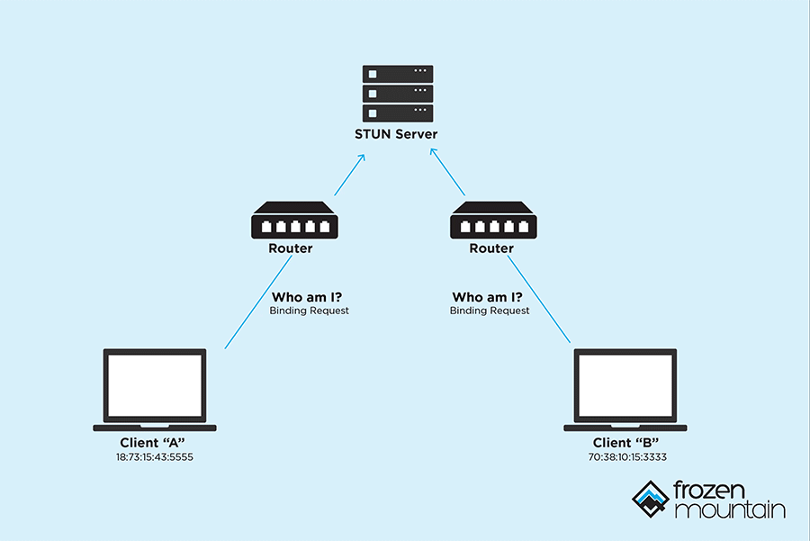
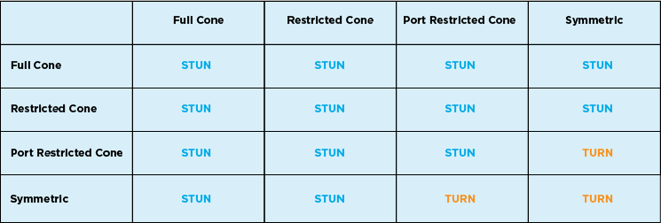
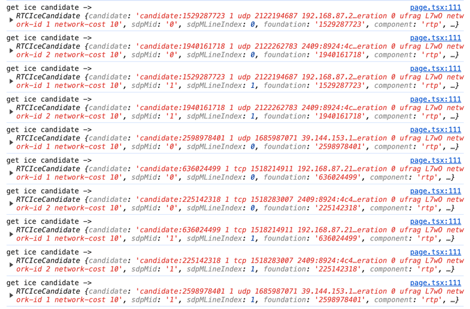
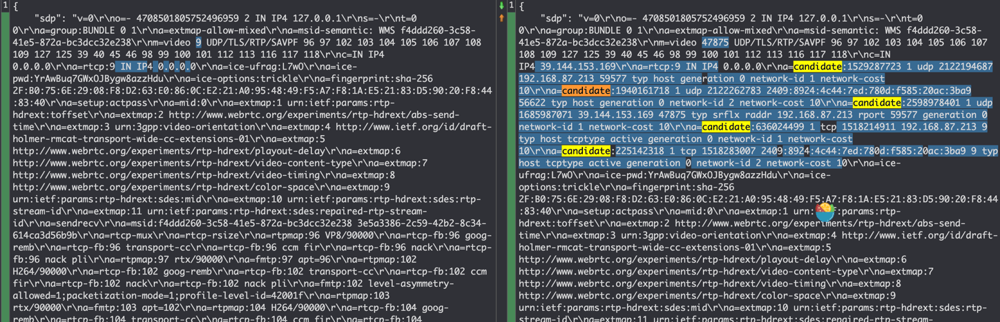
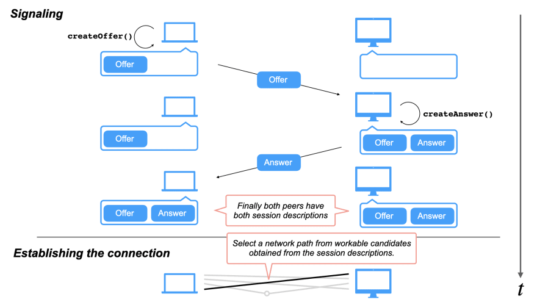
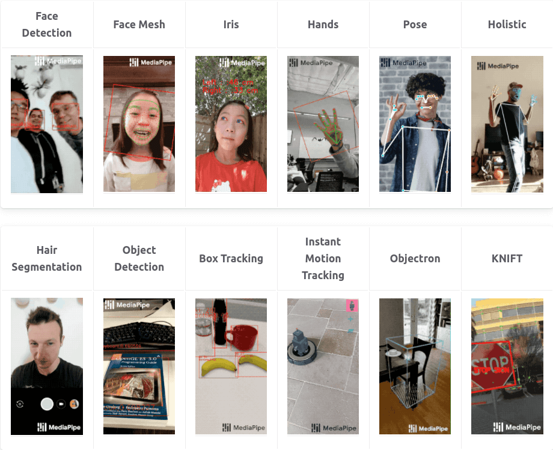
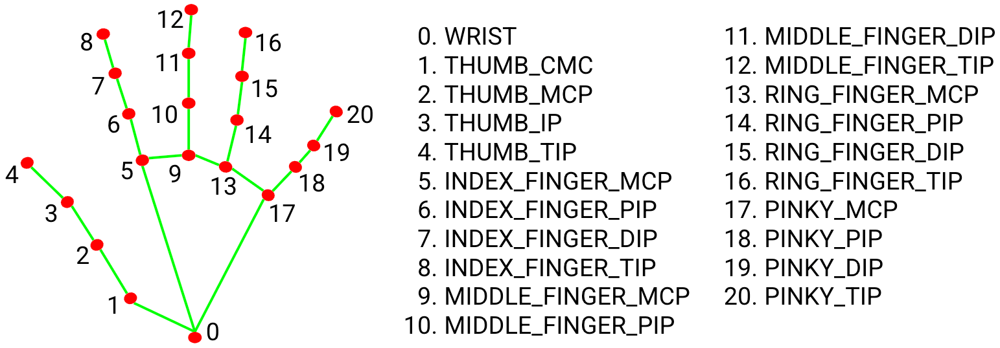
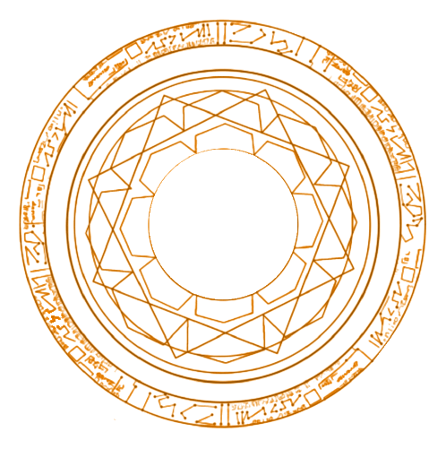
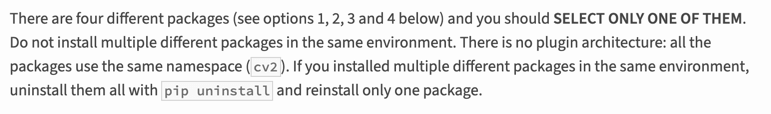

魔法盾（magic shield）指的是下面这位的，熟悉漫威的朋友肯定都见过，记得我第一次看到的时候感觉还挺酷的
本文旨在记录并总结基于 WebRTC 和 MediaPipe 实现的上述 AR 魔法盾特效，主要内容包括：
- MediaPipe Hand LandMarker 模型的使用
- WebRTC 视频传输在前后端的实现
- 使用 OpenCV 对模型输出进行后处理
实际效果如下：最多可以同时检测2只手，当手张开到一定程度会显示魔法盾
Demo地址：Next Web ML（注：因服务端算力有限，已对客户端连接数量和连接时长作了限制）
一、环境与架构
1.软硬件环境
| 硬件 | 配置 |
|---|---|
| VGA | Quadro K620 (Memory 2G, 0.863 TFLOPS) |
| CPU | 9 x vCPU (Intel Xeon E312xx (Sandy Bridge)) |
| Memory | 12G |
| SSD | 160G |
| 软件 | 版本 |
|---|---|
| OS | CentOS 8 Stream |
| VGA Driver | 550.78 |
| CUDA | 12.4 |
| OpenGL ES | 3.2 |
| Python | 3.10.14 |
| MediaPipe | 0.10.14 |
| Numpy | 1.26 |
| OpenCV | 4.10.0.84 |
| aiortc | 1.9.0 |
| fastapi | 0.111.0 |
| redis | 5.0.3 |
2.架构

如上图，采用了一个典型的WebRTC架构，相较于前几次模型在client展开，这次将模型改到server端来推理。
通常，将模型部署到不同位置，会带来不一样的收益和问题：
| 模型位置 | 优点 | 缺点 |
|---|---|---|
| client | 低延迟、低成本、隐私安全 | 性能限制 |
| server | 高性能、灵活扩展 | 较高延迟、较高成本、隐私问题 |
可以看到client和server两者是互补的，所以业界会大力倡导发展端侧性能或采用云端结合的方式。
当然，作为开发者，还会考虑到架构复杂度和软件生态的问题。经过几轮实践后，对于cv应用，站在前后端的角度来看，我感觉基于js或python的实现，各自也存在着明显的优势/痛点：
| 优势 | 痛点 | |
|---|---|---|
| js | 面向用户的ui构建和呈现方式更灵活多样 | cv或者说ai相关生态还不完善 |
| python | ai相关生态更丰富且完善 | 面向用户的ui构建和呈现方式不够灵活 |
所以这次决定将模型放到server端推理，综合了如下几点考量：
- 针对高延迟：了解到WebRTC可以较好地解决视频帧传输的延迟问题，值得尝试
- 针对高成本：mediapipe基于TFLite，模型对端侧设备（当前场景下指server）有较好的优化，低配置的server也可以运行推理
- 针对软件开发：由于当前AR效果需要相对复杂的post process，离不开opencv。尝试过一版基于opencv.js实现的纯client推理，目前的opencv.js需要手动内存管理，开发体验一般，有内存溢出的风险，而python的生态则更丰富和完善
- 针对架构：结合js和python各自优势，采用c/s架构。其实针对c/s架构，还额外考虑过让模型仍然运行在client，需要post process时，将数据给到server来处理，但这样就涉及到帧同步问题，而且当前Web Worker对WebRTC DataChannel的支持还不够，实现起来有点复杂，且优势不明显，所以最终采用了更简洁的方式
二、WebRTC简介
1.核心概念
（1）ICE
WebRTC本身是一种用于音视频传输的peer-to-peer的技术，但是现实世界中，网络较为复杂，存在各种软硬件的阻隔（防火墙、路由器、NAT等），导致端与端不一定能相互连上，这时候就需要ICE（Interactive Connectivity Establishment，交互式连接创建）的帮忙，来绕过这些限制，ICE的核心是STUN/TURN。
（2）STUN

STUN(Session Traversal Utilities for NAT, NAT会话穿越功能)，本质上就解决一个问题：帮client找出他们的公网ip和port。当两个client知道了自己的ip和port后，就可以相互直连进行通讯了，当然这是比较理想的情况
（3）Symmetric NAT 和 Cone NAT
Symmetric NAT 和 Cone NAT 都是网络地址转换（NAT）的一种类型，用于将内部网络上的私有地址转换为公网地址。
Cone NAT：在同一主机上，同一端口会被映射为相同的公网IP和端口。这意味着无论从哪个内部地址发起连接，NAT都会使用相同的外部端口号。
Symmetric NAT：每次请求一个新的外部地址时，NAT会分配一个新的外部端口号。即使是从同一个内部地址和端口发起的连接，每次请求也可能被映射到不同的外部端口号
下图列出了可能的NAT组合情况：

所以即使用上了stun server，还是存在无法绕过NAT的可能，这时候就需要turn出场了
（4）TURN

TURN(NAT中继穿越方式Traversal Using Relays around NAT)，用于在对等连接失败时中继流量，当然这样就需要消耗额外的资源和带宽，还有隐私风险，所以网上有很多公开免费的stun server，却很少有免费的turn server。
（5）Server的优势
将server作为peer的一个显著优势，是server通常情况下都是reachable的，也就是说可以没有turn。当然，在连接建立后，还会受到网络质量、通信距离、带宽等的影响，如何保持稳定的连接，就是另外一个话题了。
（6）SDP
会话描述协议Session Description Protocol (SDP), 是一个描述多媒体连接内容的协议，例如分辨率，格式，编码，加密算法等，在数据传输时让两端都能够理解彼此的数据。
2.建立连接的流程
下面的代码部分：client webrtc用纯js实现（当然也可以选用peerjs等三方包），server使用python版aiortc实现
（1）client通过navigator.mediaDevices.getUserMedia()获取本地媒体
1 | const stream = await navigator.mediaDevices.getUserMedia({ video: true }); // 这里只获取摄像头权限 |
（2）client创建一个RTCPeerConnection，并添加一些listener
1 | const createPeerConnection = () => { |
（3）client将音视频轨添加到PeerConnection中
1 | stream.getTracks().forEach((track) => { |
（4）client创建offer，并设置为本地sdp描述
1 | const offer = await pc.createOffer(); |
（5）client请求 STUN server 提供 ice 候选 (ice candidates)
stun server会返回多个ice候选，通过添加listener，我们可以看到相关信息：
1 | pc.addEventListener("icecandidate", (evt) => { |

单个candidate包含的信息如下：
1 | address:"192.168.87.213" |
（6）client会通过一套算法，对获得的candidates进行过滤筛选，然后添加到offer中
对比添加candidates前后的offer，可以看到这里有5个candidates被加了进来

（7）开始signaling信令交换，client通过某种方式将offer发给server
这里的“某种方式”，在协议中并没有强制规定，可以是http、websocket等，如下是使用fetch的示例：
1 | const response = await fetch(`${BACKEND_URL_PREFIX}webrtc/offer`, { |
（8）server接收offer，并创建一个peerConnection
1 |
|
（9）server为peerConnection设置一些listener
1 |
|
（10）server将offer设置为远端sdp描述
1 | await pc.setRemoteDescription(offer) |
（11）server创建answer，设置为本地sdp描述，并将answer返回给远端
1 | answer = await pc.createAnswer() |
（12）client接收到answer，将其设置为远端sdp描述
1 | const answer = await response.json(); |
至此，signaling完成，client和server都保存了自己和对方的sdp描述信息
（13）建立p2p连接
根据双方收集到的ice candidates，测试连通性，选择最优路径，建立p2p连接，这一步是协议自动完成的。
webrtc建立连接的整个流程，可以用下图来表示：

3.DataChannel
WebRTC中的DataChannel可以用来发送一些额外的数据，比如在视频会议中，可以发送文件或消息。
这里我是用来计算RTT和获取一些server端的资源信息：
1 | // client |
1 | # server |
三、MediaPipe简介
1.什么是MediaPipe？

MediaPipe是Google Research开发并开源的一款跨平台多媒体机器学习应用框架，用于构建基于机器学习的应用程序，特别是涉及到计算机视觉、音频处理、姿势估计等领域。
MediaPipe包括了MediaPipe Solution、MediaPipe Framework等。我这次用到的是Solution，它基于MediaPipe Framework构建，提供了很多现成的解决方案，如人脸检测、手势识别、姿态估计等，可以快速的集成到自己的应用中，并且支持多种平台，包括移动设备、桌面和网页。
2.MediaPipe Hand Landmarker
该模型可以检测手部关键点，基于这些关键点信息，我们可以用来构建视觉渲染效果

根据上图，手点的英文可以归纳为：
- thumb【大拇指】，index【食指】，middle【中指】，ring【无名指】，pinky【小指】
- wrist【掌根】，mcp【指根】，tip【指尖】
模型返回的是一个二维数组，包含左手21个点的xyz坐标，右手21个点的xyz坐标
四、AR魔法盾实现
这里主要参考了油管上这位up主，并做了调整改进，主要区别在于：
- up主是用python在本地摄像头上实现的，我调整成了整合前端的webrtc方式
- up主后半段代码有些乱，我重新对结构进行了调整优化
1.加载模型和魔法盾图片
1 | MODEL_PATH = f"{Path(__file__).parent.parent}/model/hand_landmarker.task" |
魔法盾的图片长这样：

2.模型初始化
num_hands最多同时侦测2只手，Delegate可以选择CPU或GPU
1 | def init_detector(callback): |
3.opencv读取视频帧，并传入模型进行推理
1 | image = cv2.flip(frame, 1) |
4.解析模型输出
1 | h, w, c = image.shape |
5.计算单只手的张开比例
手的张开比例ratio = hand_open距离 / hand_close距离
hand_open距离 = 食指指尖到小指指尖的距离，其实换成大拇指指尖应该也可以
hand_close距离 = 掌根到食指指根距离
1 | # calculate distance and ratio |
6.如果ratio在0.5～阈值之间，则显示手指连线；超过阈值则显示魔法盾
1 | # draw hand lines or show shield |
7.计算魔法盾显示位置和尺寸
以中指指根为圆心坐标，手掌闭合时的距离放大一定比例作为直径，来计算出左上顶点的坐标，并保证直径和左上顶点不会超过图片的宽和高
1 | x1, y1, diameter, shield_size = self.calc_shield_position(image, hand, hand_close) |
8.获取旋转一定角度的图片
self.deg是实例属性，ANG_VEL为角速度，搭配旋转矩阵和仿射变换，每次都可以让图片旋转一定角度
1 | def get_rotated_image(self): |
9.合成视频帧
根据计算出的shield_size，对shield img做resize，并取出alpha通道做中值模糊，作为后续合成的mask。
根据左上顶点坐标，在原图中裁剪出shield img大小的区域，作为背景；shield img则作为前景，两者进行图片合成
将合成后的图片重新填充回原始图片，然后作为视频帧返回
1 | def transparent(self, shield_img, x, y, image, size=None): |
五、遇到的问题
1.ImportError: libGL.so.1: cannot open shared object file: No such file or directory
python版opencv有4种包：opencv-python、opencv-contrib-python、opencv-python-headless、opencv-contrib-python-headless，官方建议只安装4种中的1种。而mediapipe目前包含的是opencv-contrib-python，如果已经安装了其他版本的包，则可能会冲突

其实如果在server端使用opencv的话，官方更推荐headless版的，它不包含GUI功能，更小更轻量，但遗憾的是，mediapipe目前还未提供对headless包的支持：相关issue
2.在云服务器上的ICE Connection Fails
ice通信需要用到udp端口，一开始没有在防火墙上开启，开启后就连接正常了：相关信息
3.No accelerated colorspace conversion found from yuv420p to bgr24
平台相关问题，在我的Mac M1上遇到了，而在云服务器上是好的。视频流在传输过程中用的yuv格式，而opencv在转码时用到了ffmpeg。根据目前查到的信息，Mac的ffmpeg在底层加速时用了quick time，似乎需要更新quick time才能解决。
4.RuntimeWarning: As the c extension couldn’t be imported, google-crc32c is using a pure python implementation that is significantly slower. If possible, please configure a c build environment and compile the extension
暂未解决
5.Feedback manager requires a model with a single signature inference. Disabling support for feedback tensors
暂未解决
六、有待改进的地方
1.实际测试中，发现signaling花费的时间较长，存在优化空间
2.后端代码运行后，CPU和GPU占用率都很高，可以进一步优化，比如对待处理的视频帧进行缩小，减少计算的数据量
3.server端配置一般，算力有待提高
4.魔法盾的实现代码中，部分算法可以优化，个别阈值也是写死的，可以进一步调优
5.整体效果上，还可以用seg模型进行背景替换，比如换成卡玛泰姬或电影中的场景，会更逼真
七、思考
因为自己不玩抖音小红书之类的，所以一开始对于这种华而不实的AR特效并不关注，以为cv只能在工业领域用到，倒是老婆的一句“这多好玩啊”让我如梦初醒，想想当初，很大程度上，自己也是因为能亲手做出各种好玩的页面效果而选择转行前端，现在回过头来看，初衷原来如此简单纯粹。好玩，也许才是真正源源不断的内在驱动力。
参考文章：
WebRTC NAT Traversal Methods: A Case for Embedded TURN
Python WebRTC basics with aiortc
Add support for WebRTC Data Channel in Workers
WebRTC with Python & React: Building Real-Time Communication Applications
From Zero to Hero with WebRTC in JavaScript and Python in small snippets of code